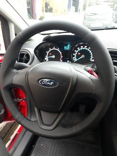
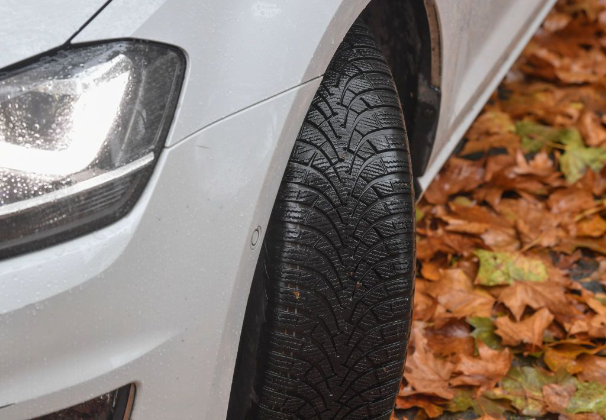
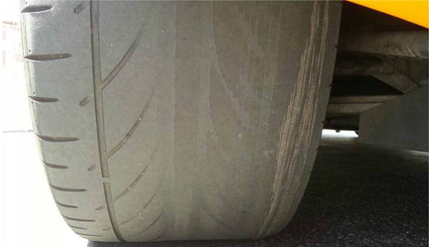
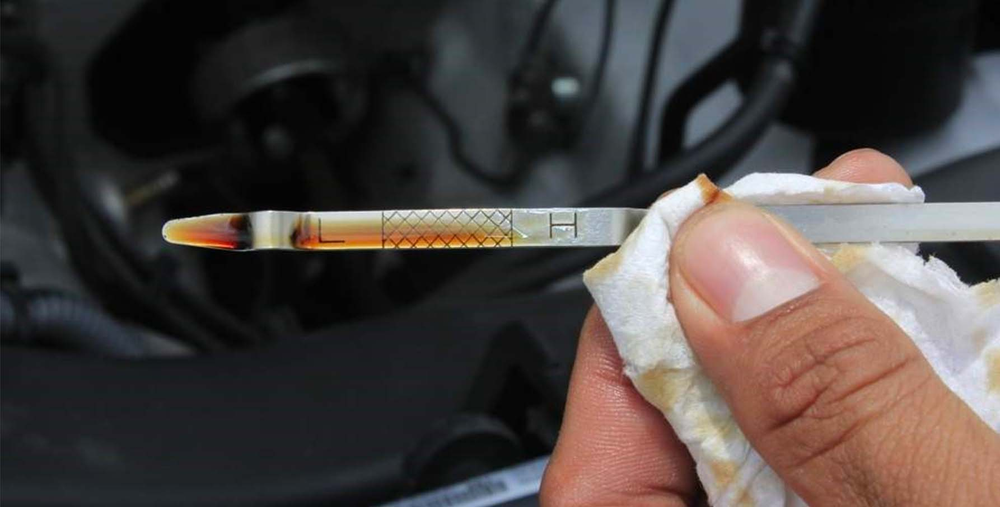
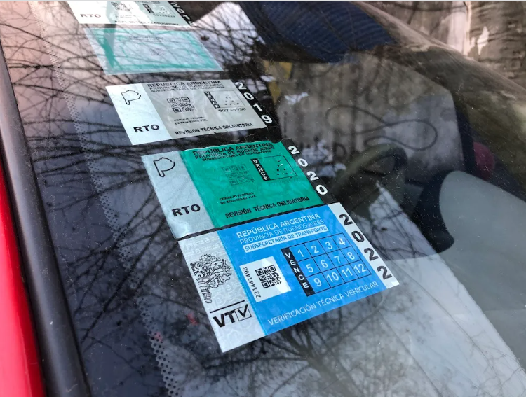

Mecanica basica
No todos tenemos que ser mecanicos, estos son algunos consejos para poder comprar un auto. De todas manera recomendamos el poder concurir a la visita del vehiculo con algun mecanico de confianza.
volante
Como podemos obsevar en las fotos tenemos dos tipos de volates. El volante más nuevo nos demuestra lo poco expuesto al sol y el poco uso del volante. La otra imagen podemos ver un volante gastado esto lo tenemos que tener en cuenta a la hora de compra un auto, ya que nos indicara si el mismo fue muy usado o no.

rueda
Las cubiertas cuentas con un "dibujo" el cual permite desplazarse sobre diferentes superficies, aunque esten mojadas de esta forma evitamos patinarnos y mejora el frenado. Cubuertas lisas no permiten una buena seguridad.
 aceite
Aceite quemado realiza una mala lubricación, produce un mal funcionamiento del motor. Puede generar taponamiento en filtos y aumentar las temperaturas. El aceite siempre tiene que mantener un color claro, para el buen funcionamiento del mismo.
vtv
La verificación tecnica vehicular es el control periodico del estado mecanico y de emisiones de gases contaminantes de los automotores. Una VTV al dia nos permite saber que el vehiculo esta en optimas condiciones.
